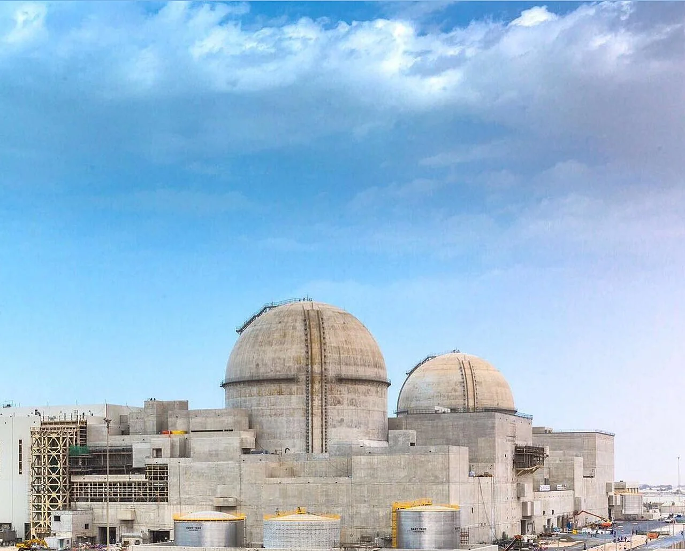
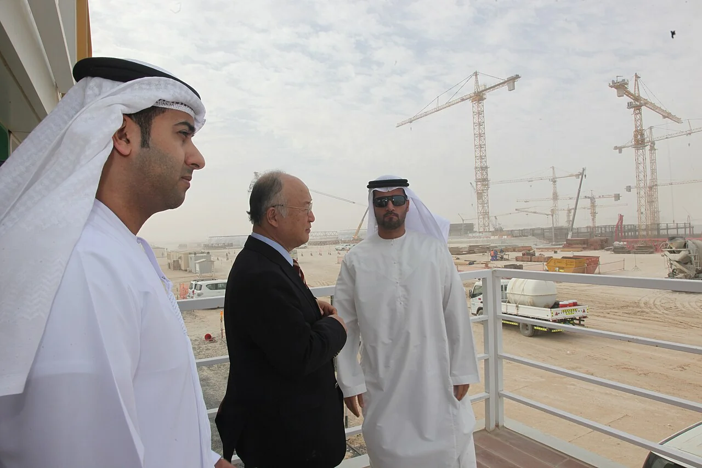
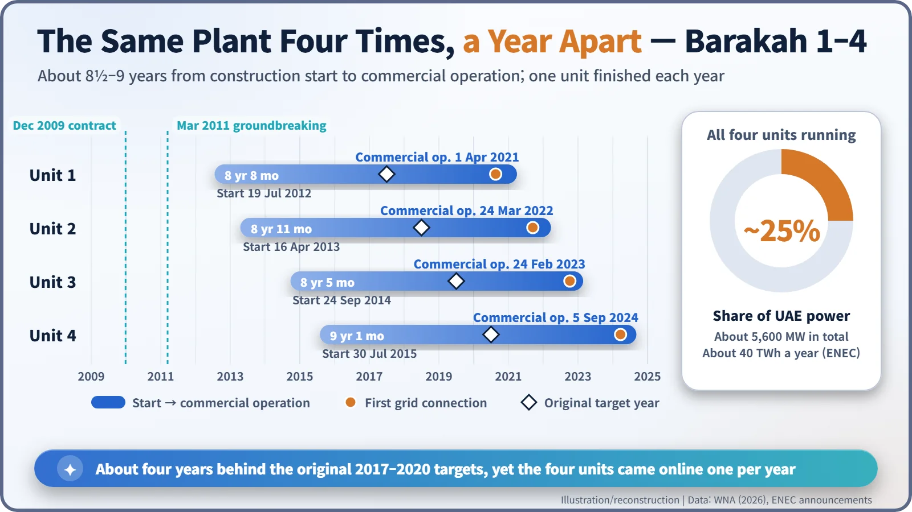

Nuclear History · 280
Why an Oil-Rich Country Bought Nuclear Power — Barakah, the UAE's Four APR1400 Reactors
A gas-rich Gulf state gave up enrichment and reprocessing, hired a Korean consortium, and built the same reactor four times in a row.
In December 2009 the United Arab Emirates chose a South Korean consortium led by KEPCO to build four APR1400 reactors at Barakah, a deal worth about 20.4 billion US dollars. Construction began in 2012; after a start-up about four years later than planned, the four units entered commercial operation one a year from April 2021 to September 2024. Barakah is the Arab world's first commercial nuclear power plant and now supplies about a quarter of the UAE's electricity.
A blessing on the Gulf coast
Barakah is Arabic for "blessing". On the coast of Al Dhafra in the United Arab Emirates (UAE), about 50 km west of Ruwais, four reactors carrying that name stand side by side. Together they form the first commercial nuclear power plant in the Arab world, and the first commercial nuclear power plant South Korea ever sold abroad. [1] [2]
Which raises an obvious question: why would a country sitting on oil and gas build a nuclear plant at all?

Too valuable to burn
In April 2008 the UAE government published a policy paper on nuclear energy. According to the World Nuclear Association (WNA), it projected that the country's need for generating capacity would rise from 15.5 gigawatts (GWe) in 2008 to more than 40 GWe by 2020. At the time more than 95% of the UAE's electricity came from fossil fuels, mostly natural gas: gas that could earn money if exported and released carbon if burned. Renewables, the paper reckoned, could cover only 6–7% of the power needed by 2020. [1]
Nuclear came with an unusual promise. In January 2009 the UAE signed a nuclear cooperation agreement with the United States (a so-called "123 agreement") and undertook not to enrich uranium or reprocess spent fuel on its own soil. Its nuclear law, passed the same year, made operating such facilities illegal. By giving up the two technologies that can lead to nuclear weapons, the UAE set what is often called the "gold standard" for such agreements. [1]
Three reactors in the final round
Three bids reached the final round: the EPR from a French consortium led by Areva, the ABWR from GE Hitachi, and the APR1400 from a South Korean consortium led by the national utility KEPCO. In December 2009 the client, the Emirates Nuclear Energy Corporation (ENEC), chose the Korean team. The announcement came on 27 December, during a visit to Abu Dhabi by South Korea's President Lee Myung-bak. [1] [2]
According to the WNA, the contract was worth about 20.4 billion US dollars and covered construction, commissioning and the first fuel loads, largely at a fixed price. The consortium included Korea Hydro & Nuclear Power (KHNP), Hyundai Engineering & Construction, Samsung, Doosan Heavy Industries and the US company Westinghouse. [1]
The APR1400 is a pressurized water reactor of the 1,400-megawatt class that Korea began developing in 1992 and that received Korean standard design approval in May 2002. It was the next generation after Korea's standardized plants of the 1990s. A pressurized water reactor keeps its cooling water under high pressure so that it carries heat without boiling; at Barakah each unit has a design output of 1,345 megawatts electric (MWe). [1]
Four units, one a year
A groundbreaking ceremony was held on 14 March 2011, and the first concrete for Unit 1 was poured on 19 July 2012. Construction of Unit 2 started in April 2013, Unit 3 in September 2014 and Unit 4 in July 2015. Building the same design in a fixed sequence lets the procedures and the crews learned on one unit carry straight over to the next, much as a bakery gets faster on its fourth identical wedding cake than on its first. [2]

It did not all go to plan. The original target was to start commercial operation of one unit a year from 2017. According to the WNA, the regulator, the Federal Authority for Nuclear Regulation (FANR), raised more than 400 findings in its review of operational readiness, delaying start-up by at least 18 months. In late 2018, voids were found in the concrete of the containment buildings of Units 2 and 3 and had to be repaired. [1] [2]
Unit 1 received its operating licence in February 2020, was first connected to the grid on 19 August 2020 and entered commercial operation on 1 April 2021, about four years later than first planned. After that the other three followed exactly one a year: March 2022, February 2023 and 5 September 2024. ENEC says the time from the start of operational readiness to commercial operation was 40% shorter for Unit 4 than for Unit 1. Whether the project as a whole stayed within budget is harder to say: public information is limited and estimates in press reports differ. [1] [3]

A quarter of the power, and new worries
The four units add up to about 5,600 MW. According to ENEC, at full output they generate about 40 terawatt-hours (TWh) a year, about 25% of the UAE's electricity, and avoid more than 22 million tonnes of carbon emissions annually. Even in 2023, before Unit 4 came online, nuclear already supplied about a fifth of the country's electricity: 33.1 TWh out of 168 TWh, according to the WNA. [1]
The plant is operated by Nawah Energy Company, owned 82% by ENEC and 18% by KEPCO, and KHNP has agreed to provide around 400 experienced staff until 2030. The consortium expects to share in running the reactors for 60 years, a reminder that exporting a nuclear plant is less a one-off sale than a partnership measured in generations. [1]
A new kind of concern has also appeared. On 17 May 2026 a drone struck an electrical generator outside the plant's inner perimeter and started a fire. No injuries or radioactive releases were reported, and the IAEA said it had been informed by the UAE that radiation levels remained normal. IAEA Director General Rafael Grossi said that "military activity that threatens nuclear safety is unacceptable." Talks on two more units, reported in 2023, had shown no concrete progress as of November 2026. [6] [4] [5] [1]